23 00 017 Removing and Installing Transmission (GS6-17BG)
23 00 017 - Removing and installing transmission (GS6-17BZ) N51/N52/N52K/N53

Special tools required:

Important!
After completion of work, check transmission oil level.
Use only the approved transmission oil.
Failure to comply with this requirement will result in serious damage to the manual transmission.
Important!
Aluminium-magnesium materials.
No steel screws/bolts may be used due to the threat of electrochemical corrosion.
A magnesium crankcase requires aluminium screws/bolts exclusively.
Aluminium screws/bolts must be replaced each time they are released.
Aluminium screws/bolts are permitted with and without colour coding (blue).
For reliable identification:
Aluminium screws/bolts are not magnetic.
Jointing torque and angle of rotation must be observed without fail (risk of damage).

Necessary preliminary tasks:
- Clamp off battery [1][2]12 00 ... Instructions For Disconnecting and Connecting Battery
- Remove underbody protection
- Remove centre muffler (N53 only)
- Remove complete exhaust system Service and Repair
- Remove heat shields
- Support engine
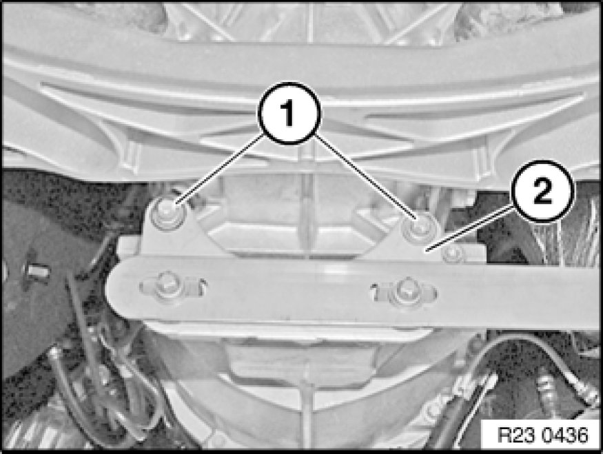
Release screws (1).
Remove exhaust system bracket (2).
Tightening torque 23 00 1AZ [1][2]23 00 Transmission in General 6 Speed.
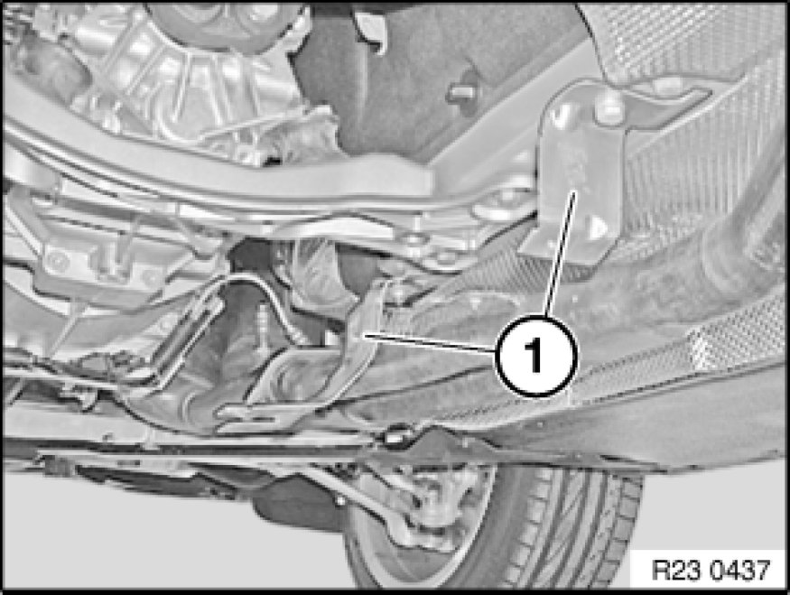
Remove holder (1).
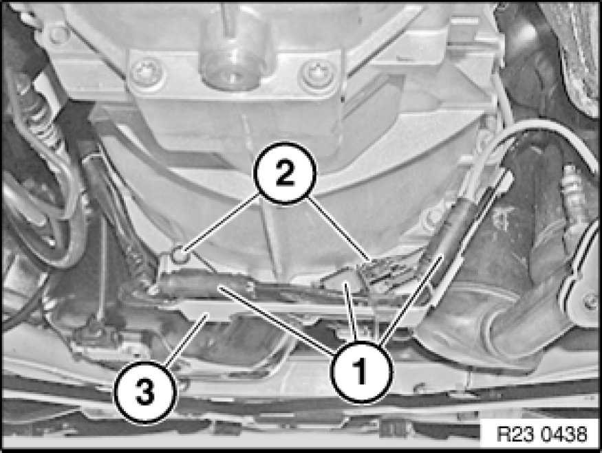
Disconnect connector (1).
Unfasten screws (2).
Remove bracket (3).
Tightening torque 23 00 1AZ [1][2]23 00 Transmission in General 6 Speed.
Illustration similar
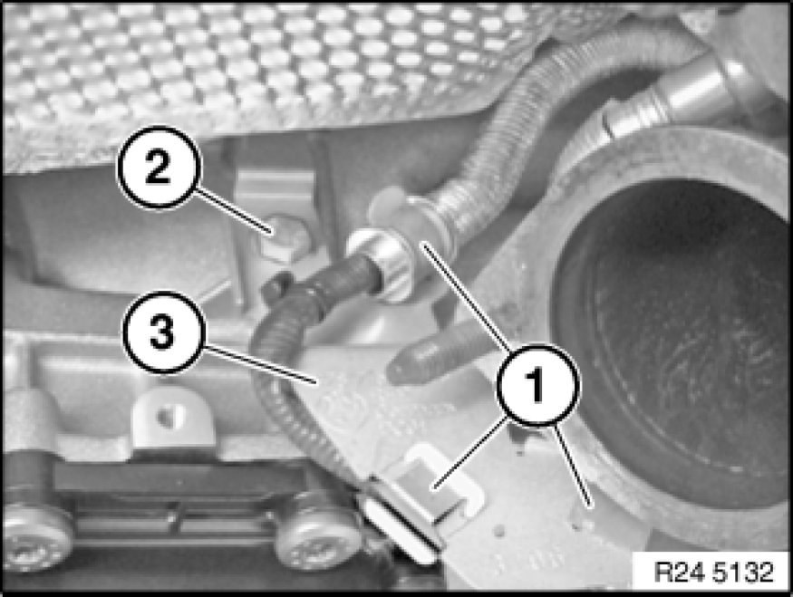
Unclip cable (1) from holder.
Release screw (2) and remove holder (3).
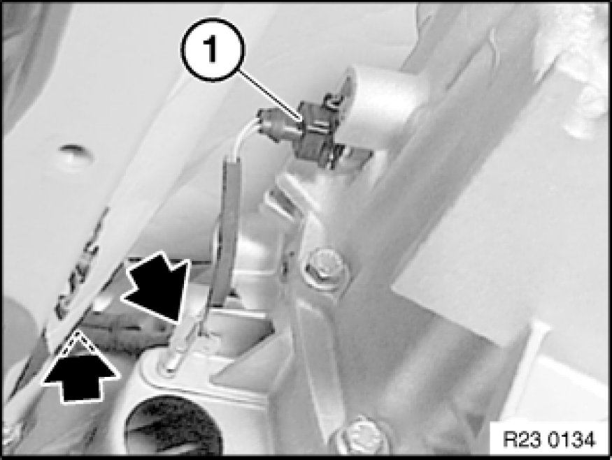
Detach plug (1) from reverse gear switch.
Detach cables from fixtures on transmission.

Supporting transmission:
Support transmission with special tools 23 4 050 , 00 2 030 00 2 030 Universal Hydro-Lifter Basic Unit.
Secure transmission to mounting with tensioning strap (1).
Tasks are described in Transmission bracket 23 .. ... Universal BMW Transmission Take-Up.
After completion of work, check transmission oil level.
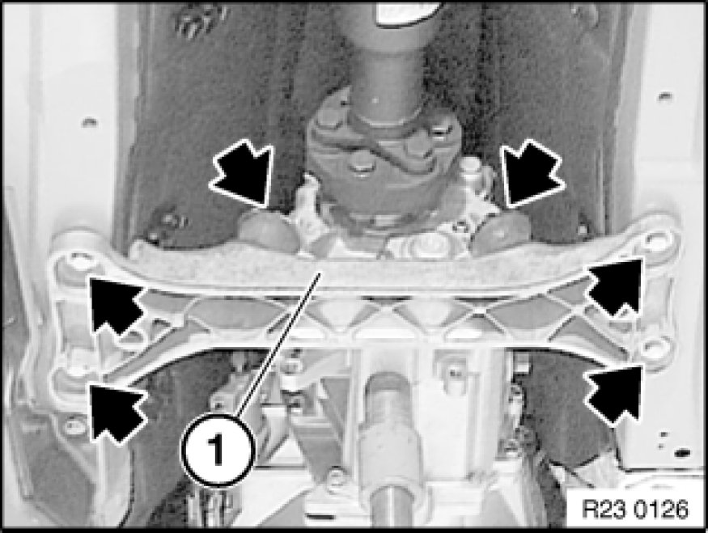
Remove screws and nuts.
Remove cross-member (1).
Tightening torque 23 71 1AZ/2AZ 23 71 Transmission Mounts.
- Remove propeller shaft from transmission.
- Release centre bearing.
- Tie propeller shaft to one side.
Tasks are described in Removing propeller shaft 26 11 000 Removing and Installing Propeller Shaft (Cardan Universal Joint) Completely
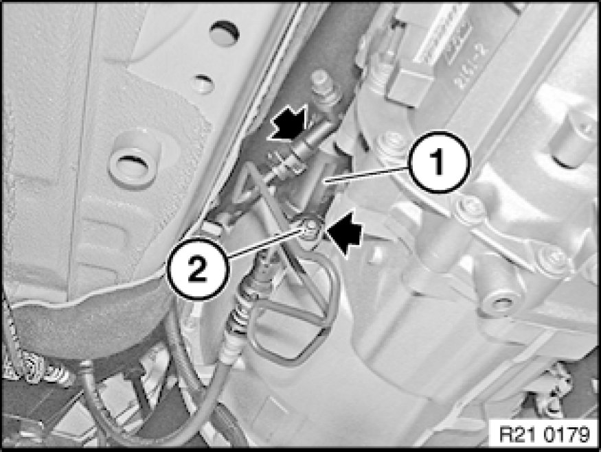
Note:
Pressure line of clutch slave cylinder remains connected.
Important!
Relieve tension on clutch slave cylinder slowly; otherwise air will be drawn in through sealing sleeve.
Release nuts (2) and remove clutch slave cylinder (1).
Tightening torque, 21 52 5AZ Specifications.
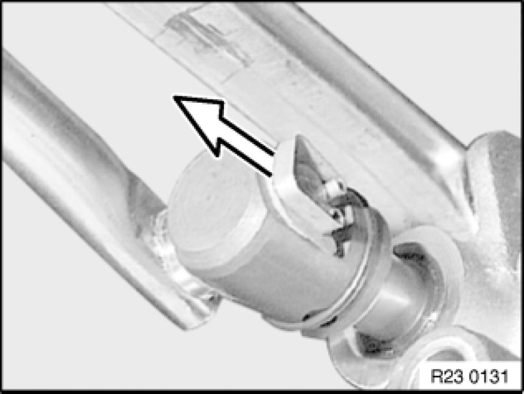
Detach locking clip.
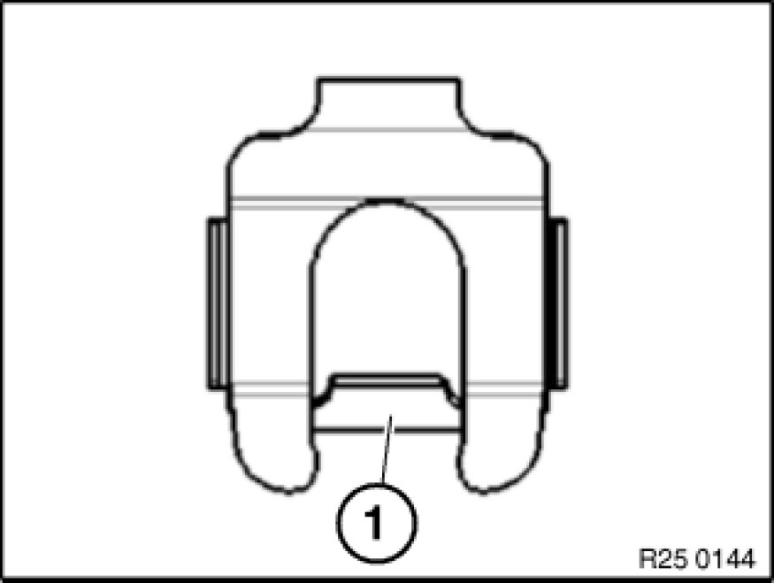
Important!
New retaining clips fitted as from 04.08.
Retaining clip must interlock captively with retaining web (1) behind shift rod pin.
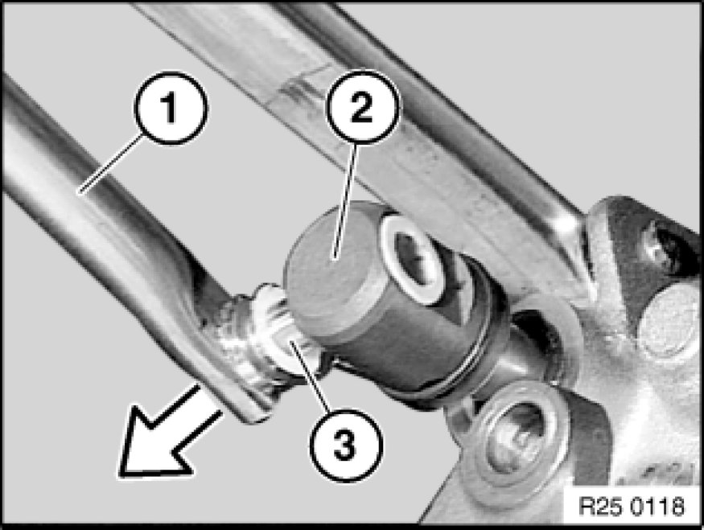
Pull shift rod (1) out of shift rod joint (2).
Installation:
Grease shift rod pin (3).
Grease,
Refer to BMW Service Operating Fluids.
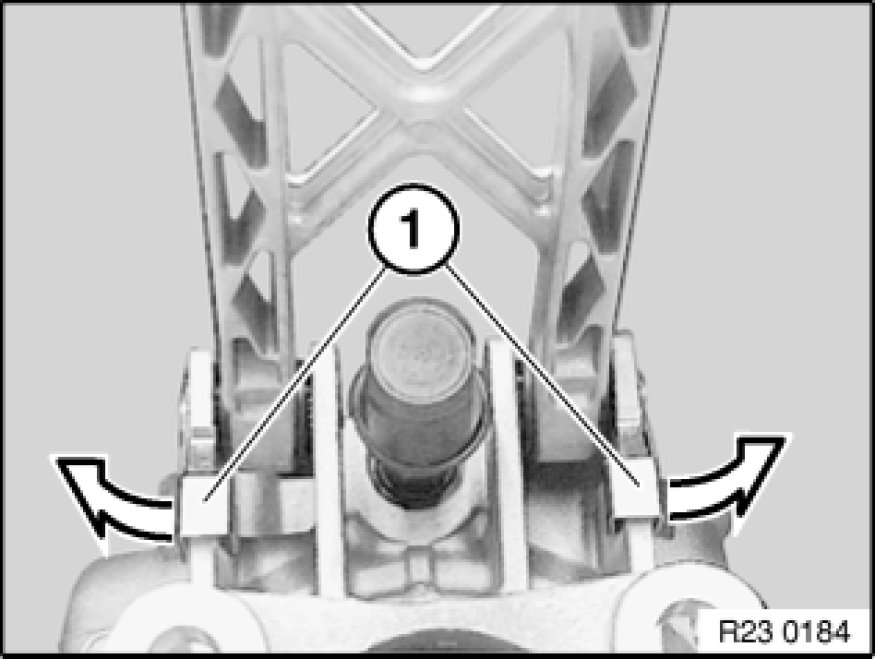
Unlock bearing pin (1) in direction of arrow and remove.
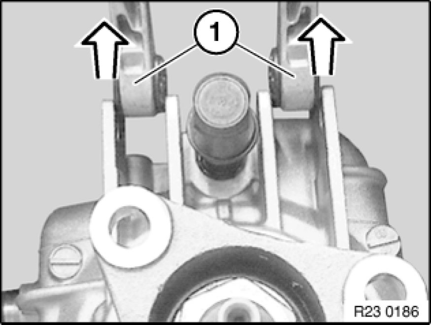
Lift out shift arm (1).
Installation:
Grease bearing pin.
Grease,
refer to BMW Service Operating Fluids.
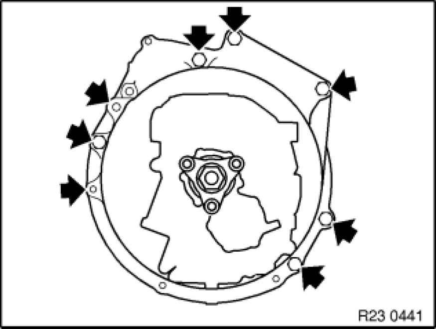
Release screws.
Installation Note:
Tightening torque, steel screws 23 00 1AZ [1][2]23 00 Transmission in General 6 Speed.
Aluminium screws must be replaced.
Tightening torque and angle of rotation
Aluminium screws/bolts 23 00 2AZ [1][2]23 00 Transmission in General 6 Speed.
Important!
Do not suspend the transmission from the transmission input shaft during removal and installation as this will deform the clutch plate. Pull out transmission towards rear and remove.
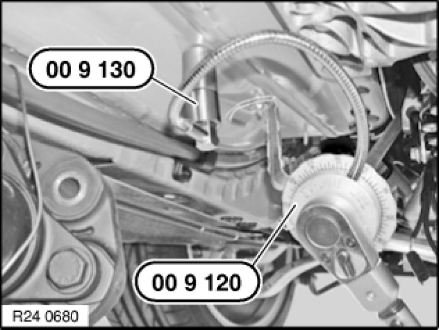
Installation Note:
Tighten down screws/bolts to specified torque.
Secure special tool and angle of rotation 00 9 120 with magnet 00 9 130 to floor plate.
Screw down aluminium screws/bolts further according to angle of rotation.
Angle of rotation 23 00 2AZ [1][2]23 00 Transmission in General 6 Speed.
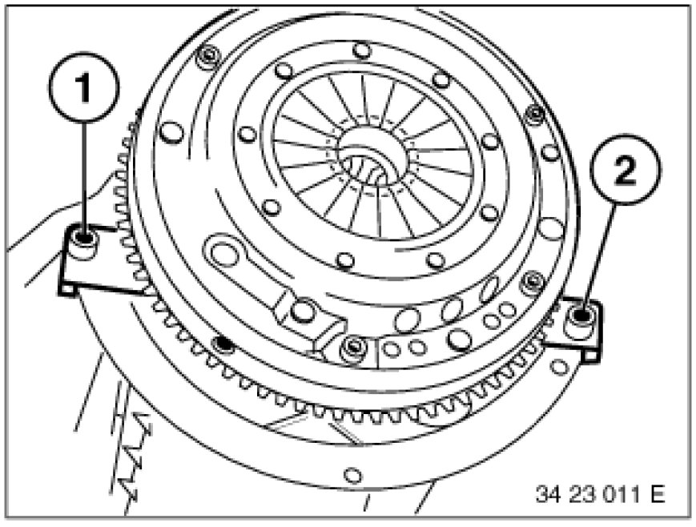
Installation:
Check dowel sleeves (1 and 2) for correct seating.
Replace damaged sleeves.
Ensure correct position of cover plate.
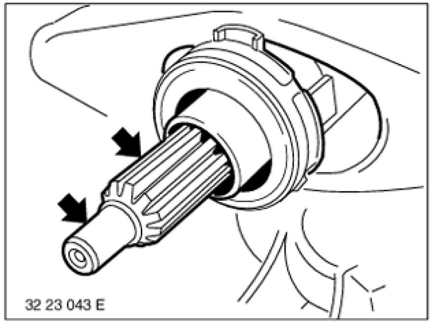
Installation:
Check lubrication of transmission input shaft for sticky consistency. If grease is sticky, clean input shaft and replace clutch plate Service and Repair.
Check clutch plate for friction rust in splines and replace if necessary Service and Repair.
Remove any grease and lining abrasion from splines of clutch plate by mechanical means (with a cloth).
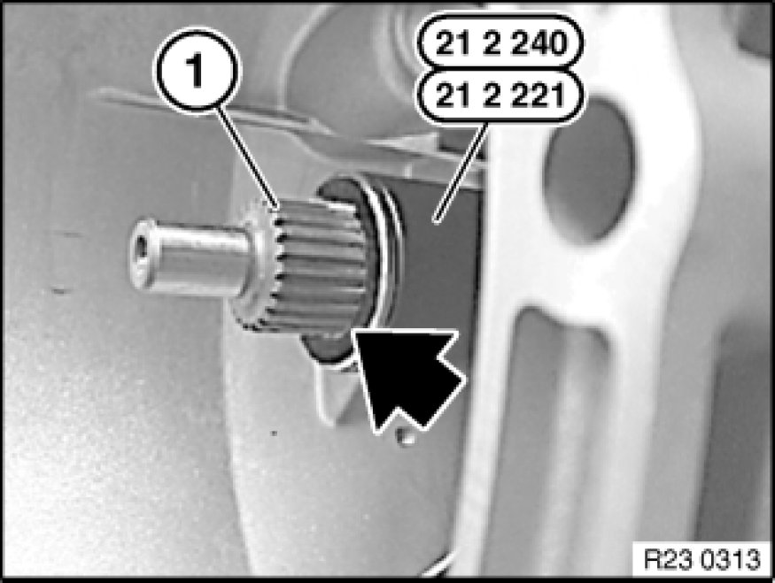
Installation Note:
Greasing specification:
- Remove and clean release bearing and release lever (do not grease).
- Push on grease scraper ring 21 2 220 as far as it will go.
- Grease splines (1) of input shaft with a brush.
- Refer to BMW Service Operating Fluids
- Detach grease scraper ring.